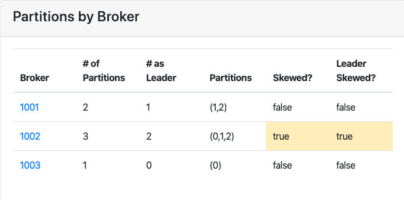
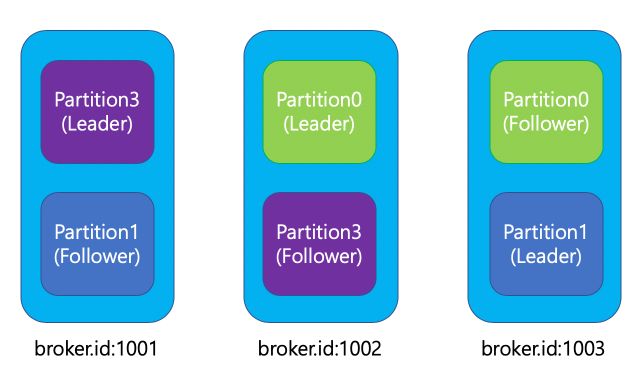
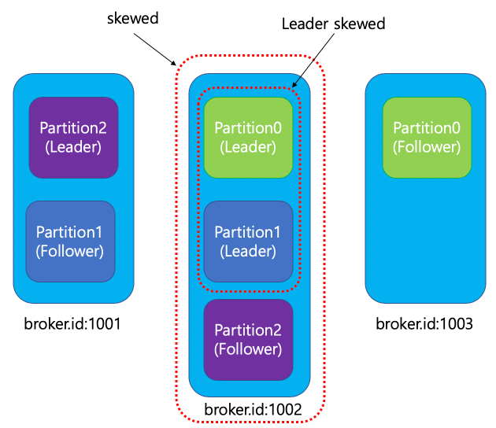
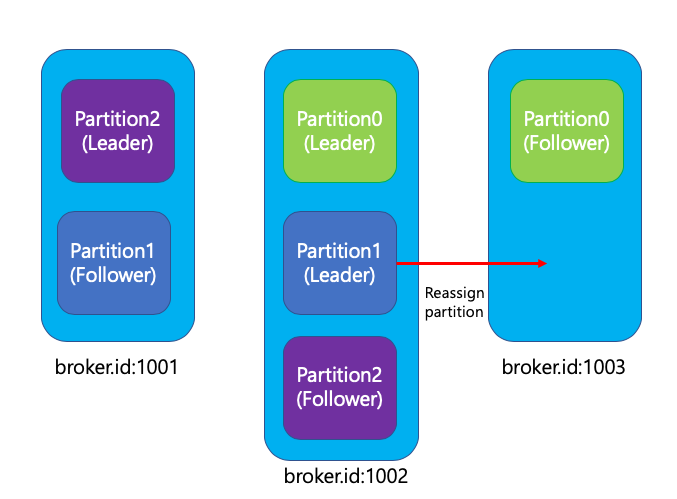
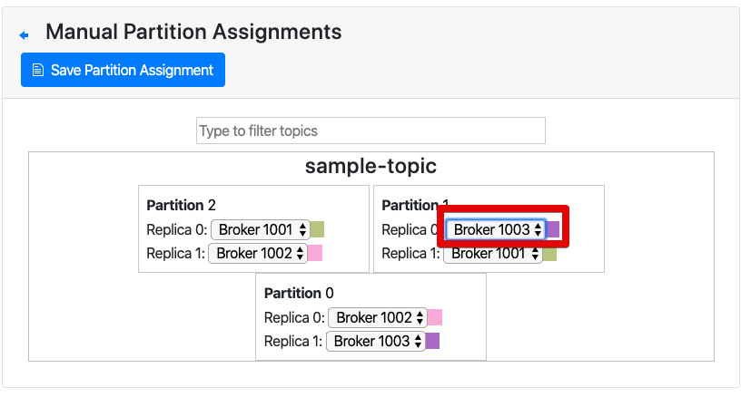

[Kafka] 파티션 Skew, Leader Skew 그리고 Reassign Partition
kafka-manager에서 카프카를 운영하다보면 Skewed 혹은 Leader Skewed가 true가 된 것을 종종 볼수 있다.

그럼 Skew는 무엇일까?
Skew는 카프카 토픽의 파티션들이 각 브로커 서버에 균등하게 나눠지는것이 아니라, 한쪽으로 치우친 현상으로 Skew라고 한다.
또한 각 파티션들의 리플리케이션에 의해 Leader Partition/Follower Partition 으로 나누는데, Leader Partition이 각 브로커에 균등하게 분산되지 않은것을 Leader Skew 라고 한다.

위 그림은 kafka broker : 3, partition: 3, replication factor: 2 일때 이상적으로 분산된 상태이다. 이 상태에서 일부 브로커서버를 재시작 하게 되면 파티션 들이 HA를 위하여 live 된 브로커로 이동하게 되는데 이때 skew가 발생하게 된다.

그림에서 보는것과 같이 브로커당 파티션이 2개씩 할당이 되어야 하지만, 1002 브로커에 파티션이 3개가 할당되었기 때문에 Skew가 발생된 상황이다. Leader partition 또한 각 브로커에 1개씩 할당되어야 하지만, 1002 브로커에 2개의 Leader partition이 몰려있기 때문에 Leader Skew 가 발생한 상태이다.
Skew를 해결할 수 있는 방법은? Partition Reassign
한쪽으로 몰린 Skew를 해결하기 위해서는 카프카에서 제공하는 Partition Reassign을 이용하여 파티션을 재배치 해주면 된다.

1) kafka-reassign-partitions 사용하는 방법
카프카에서 기본적으로 제공해주는 스크립트 중에 kafka-reassign-partitions.sh 라는 스크립트가 존재한다. 해당 스크립트는 json 타입의 파일로 파티셔닝 순서를 적어주고, 해당 파일을 통해 파티션을 재할당 하는 역할을 하게된다.
{"version":1,
"partitions":[
{"topic":"sample-topic", "partition":0,"replicas":[1002,1003]},
{"topic":"sample-topic", "partition":1,"replicas":[1003,1001]},
{"topic":"sample-topic", "partition":3,"replicas":[1001,1002]}
]}
$ bin/kafka-reassign-partitions.sh \
--zookeeper zookeeper:2181 \
--reassignment-json-file ./repiartion.json \
--execute
json 내용을 살펴보면 상당히 심플하게 구성된 것을 볼수 있다.
//sample-topic 이라는 토픽의 0번 파티션을 broker.id가 1002, 1003인 브로커로 할당한다.
//이때 replicas array의 맨 처음이 Leader가 되고, 그 뒷부분은 Follower가 된다.
{"topic":"sample-topic", "partition":0,"replicas":[1002,1003]},
2) kafka-manager 의 Reassign을 사용하는 방법
위의 kafka-reassign-partitions 으로 파티셔닝 하는 방식은 수기로 json파일을 생성해야 하기 때문에 파티션 갯수와 브로커 갯수가 많을수록 작성하기 고통스럽다.
만약 kafka-manager 가 설치된 상황이라면 kafka-manager에서 제공하는 reassign 기능을 이용하여 손쉽게 재할당을 할 수 있게 된다. (kafka-manager 설치는 여기에서 확인하자)
- kafka-manager의 상단메뉴에서 Topic -> List -> 재할당 하기 위한 토픽을 선택한다.
Operations영역의Manual Partition Assignments를 선택한다.- 와 같이 Partition1->Replica 0을 Broker 1002에서 1003으로 변경하고 상단의
Save Partition Assignment를 누른다. - 3번의 작업후 바로 재할당 작업이 수행되지 않는다.
다시 1번의 위치로 이동한 뒤
Reassign Partitions버튼을 눌러줘야 실제로 파티션의 재할당이 수행된다.
위와 같은 방식으로 kafka-manager를 설치하면 kafka의 다양한 운영을 쉽게할 수 있으니, 사용하지 않았다면 사용해 보는것도 좋다.